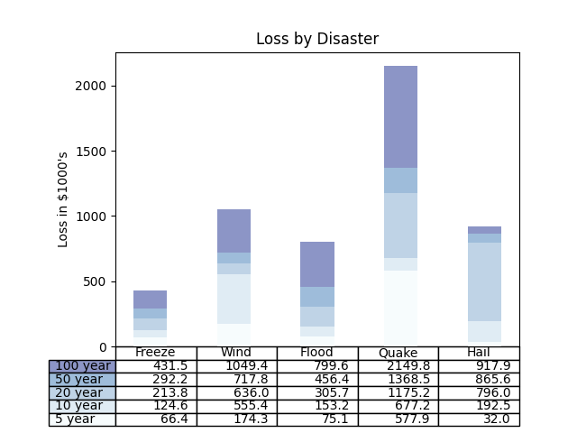

Note
Click here to download the full example code
Table Demo¶
Demo of table function to display a table within a plot.
import numpy as np
import matplotlib.pyplot as plt
data = [[ 66386, 174296, 75131, 577908, 32015],
[ 58230, 381139, 78045, 99308, 160454],
[ 89135, 80552, 152558, 497981, 603535],
[ 78415, 81858, 150656, 193263, 69638],
[139361, 331509, 343164, 781380, 52269]]
columns = ('Freeze', 'Wind', 'Flood', 'Quake', 'Hail')
rows = ['%d year' % x for x in (100, 50, 20, 10, 5)]
values = np.arange(0, 2500, 500)
value_increment = 1000
# Get some pastel shades for the colors
colors = plt.cm.BuPu(np.linspace(0, 0.5, len(rows)))
n_rows = len(data)
index = np.arange(len(columns)) + 0.3
bar_width = 0.4
# Initialize the vertical-offset for the stacked bar chart.
y_offset = np.zeros(len(columns))
# Plot bars and create text labels for the table
cell_text = []
for row in range(n_rows):
plt.bar(index, data[row], bar_width, bottom=y_offset, color=colors[row])
y_offset = y_offset + data[row]
cell_text.append(['%1.1f' % (x / 1000.0) for x in y_offset])
# Reverse colors and text labels to display the last value at the top.
colors = colors[::-1]
cell_text.reverse()
# Add a table at the bottom of the axes
the_table = plt.table(cellText=cell_text,
rowLabels=rows,
rowColours=colors,
colLabels=columns,
loc='bottom')
# Adjust layout to make room for the table:
plt.subplots_adjust(left=0.2, bottom=0.2)
plt.ylabel("Loss in ${0}'s".format(value_increment))
plt.yticks(values * value_increment, ['%d' % val for val in values])
plt.xticks([])
plt.title('Loss by Disaster')
plt.show()
Keywords: matplotlib code example, codex, python plot, pyplot Gallery generated by Sphinx-Gallery